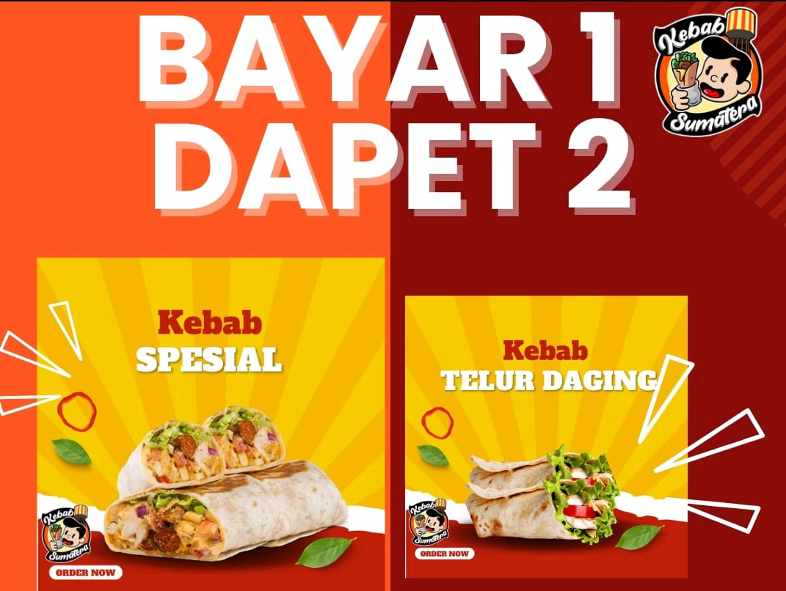
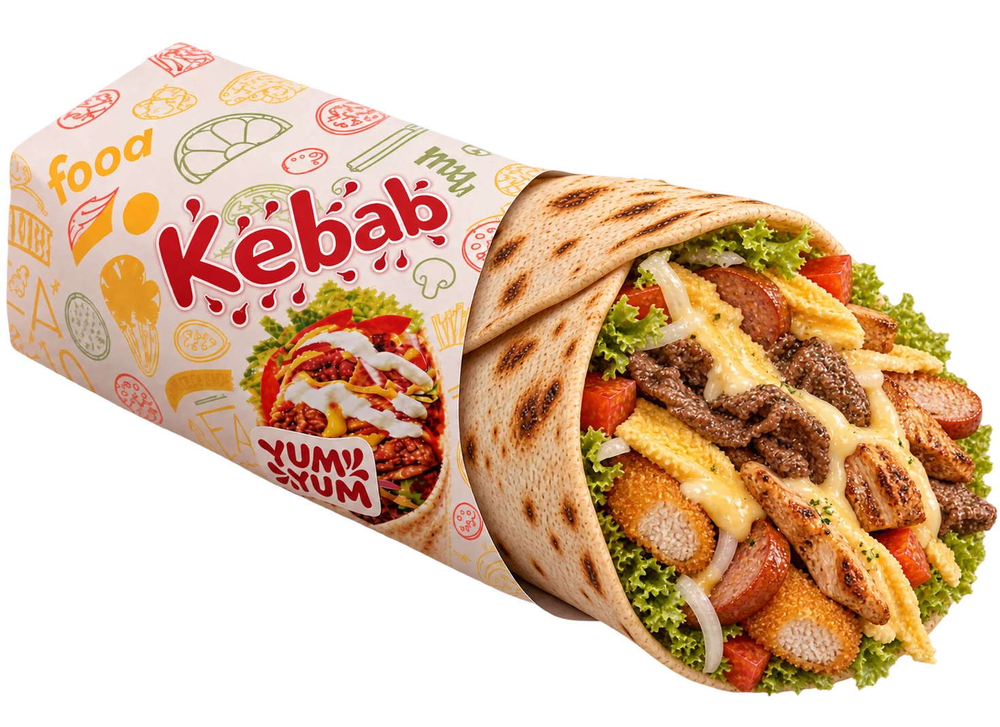

Dua kebab. Satu alasan buat kumpul.
Kebab Spesial + Kebab Telur Daging. Buat dimakan berdua, atau disimpan sendiri. Kamu yang pilih.
Cek ketersediaan dan harga promo saat memesan.

Pilih dasarnya, tambah isiannya, lalu kasih sentuhan terakhir. Lihat racikanmu berubah setiap kali kamu memilih.

Ada malam yang butuh kebab. Ada juga yang butuh burger, lumpia, atau roti bakar buat teman ngobrol. Di Kebab Sumatera, kamu tinggal pilih sesuai selera.
Temui kami di Jl. Ps. 7, Hutan, Percut Sei Tuan, setiap hari pukul 18.00–23.00 WIB. Mau makan di rumah? Pesan lewat GoFood, GrabFood, atau hubungi kami di WhatsApp.
Dari gerobak di Hutan Percut sampai pesananmu. Geser untuk menjelajah, klik untuk melihat lebih dekat.
Jl. Ps. 7 · Deli Serdang
Setiap hari · 18.00–23.00 WIB Lihat outlet di TikTokMampir ke Kebab Sumatera atau pesan menu favoritmu lewat aplikasi.